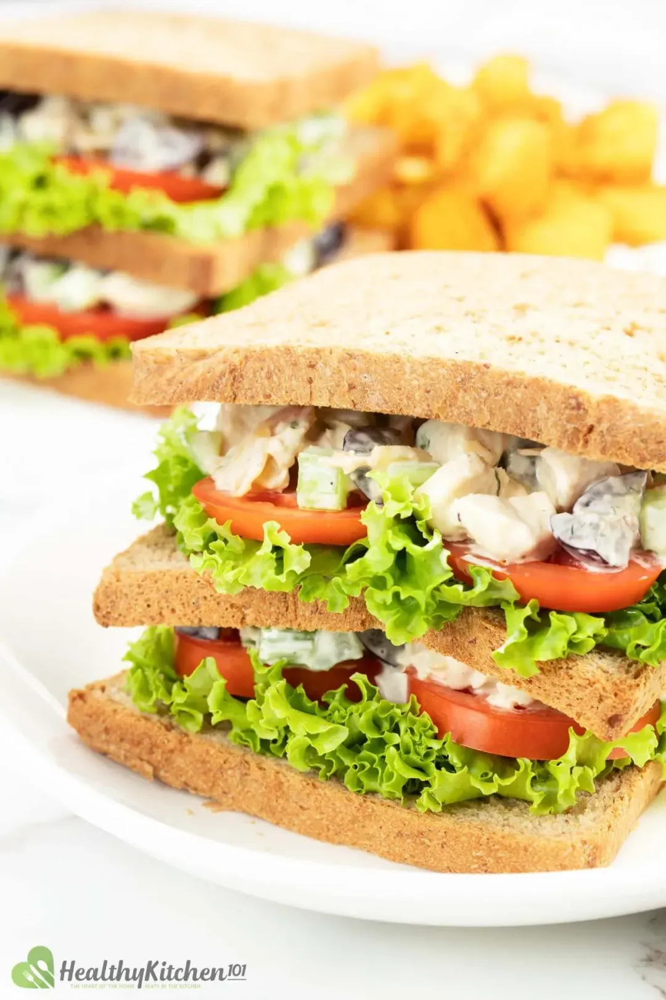

Home
Chicken Salad Sandwich

Description
Combine cooked chicken cubes with grape and cucumber mix and place between slices of wheat bread to make a tasty Chicken Salad Sandwich.
Recipes
- 12 oz skinless boneless chicken breasts
- 12 slices sprouted wheat bread
- 4 oz tomatoes (2 medium, sliced)
- 2 oz lettuce (chopped)
- 2 oz cucumber (diced)
- 2 oz celery (diced)
- 1 oz sliced almonds
- 1 cup grapes (halved)
- 6 tbsp Japanese mayonnaise
- 1 tbsp olive oil
- 1 tbsp onion (diced)
- 1/4 tsp salt
- 1 tsp lime juice
- 1/2 tsp traditional Dijon mustard
- 1 tsp cilantro
- 1 tsp scallion
- 1/2 tsp black pepper
Steps
- Heat 1 tbsp olive oil in a cast iron pan on high heat. Arrange 12 oz chicken breasts in the pan to fry for about 15-20 minutes. Slightly season with 1/4 tsp salt and 1/2 tsp black pepper. Turn over halfway through to ensure even cooking on both sides.
- Once done, let them cool and cut into cubes.
- In a bowl, add all the ingredients together: Chicken cubes, 2 oz cucumber, 2 oz celery, 1 cup grapes, 1 oz almonds, 6 tbsp mayonnaise, 1 tsp lime juice, 1/2 tsp mustard, 1 tsp cilantro, 1 tsp scallion, 1 tbsp onion.
- Toss well. Cover with plastic wrap and refrigerate for at least one hour.
- Finally, serve between bread slices with 2 oz chopped lettuce and 4 oz sliced tomatoes.